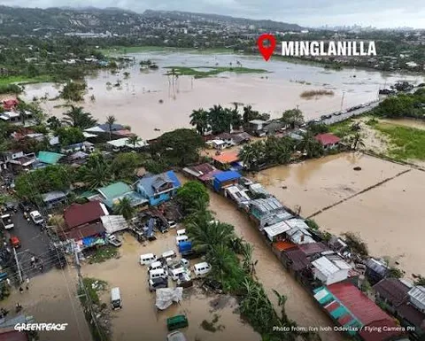

FLOOD

Story
flood happens when water covers land that is normally dry. It can occur because of continuous heavy rainfall, overflowing rivers, overflowing drainage systems, or strong storms. In the Philippines, flooding commonly happens during the rainy season, especially in low-lying areas and communities near rivers. When heavy rain continues for several hours or days, water levels can rise quickly and enter houses, roads, schools, and businesses. Some floods happen slowly, while others occur suddenly and can carry strong currents. Floodwater may also contain garbage, mud, chemicals, and harmful bacteria that can cause diseases. Flooding can destroy houses, damage furniture and appliances, ruin crops, and affect people's livelihoods. Roads may become impassable, making it difficult for people to travel or reach hospitals. Families may also need to evacuate to safer places to avoid being trapped by rising water. Floods can be dangerous, but their effects can be reduced through proper preparation. People should keep emergency supplies ready, avoid walking or driving through floodwater, listen to weather announcements, and move to higher ground when flooding becomes dangerous.
Floods may happen quickly or slowly. They can affect homes, schools, roads, farms, and businesses.
Consequences
- Houses and properties may be damaged.
- People may be injured or forced to evacuate.
- Floodwater may contain dirt, sewage, and harmful materials.
- Electricity and water services may stop.
House-damage totals depend on the specific flood event and location.
How Should We Prepare?
- Prepare an emergency bag.
- Keep important documents in waterproof packaging.
- Move valuables and appliances to higher places.
- Listen to weather updates.
- Never walk or drive through floodwater.
Emergency Hotlines - Naga City, Cebu
National Emergency Hotline: 911
Naga City CDRRMO: 0916-316-4638 / 0908-413-7220
Fire Station: 0969-410-6706
Use your own area's official emergency numbers if your assigned location is different.
Sources: PAGASA